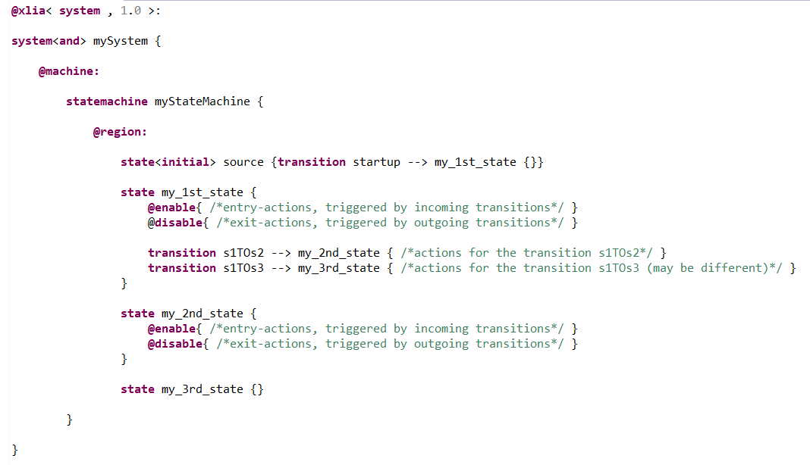

"@disable{...}" activity primitive
Generalities
The "@disable{...}" activity primitive corresponds to the activity of a UML statemachine exiting a state.
It can only have a "state" for parent. It is evaluated when deactivating any state.
The evaluation of a transition will follow this pattern :
- source state deactivation (which is what is done within the "@disable{...}" activity primitive)
- action evaluation
- and then target state activation
Example
Below is an example of the syntax in use :

Here, if during the execution, the machine goes from state :
- s1 to s2, will be triggered in order :
- actions inside the "@disable" of state s1
- actions for the transition s1TOs2
- actions inside the "@enable" of state s2
- s1 to s3, will be triggered in order :
- actions inside the "@disable" of state s1
- actions for the transition s1TOs3
- nothing else because state s3 doesn't have an "@enable" action primitive
Remarks
Other scheduling possibilities will be available in further XLIA versions.